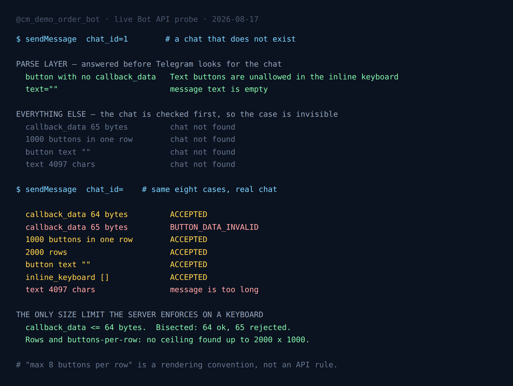

Half of Telegram's Bot API Errors Arrive Before It Checks Your Chat Exists
I found this by making a mistake. I was probing inline keyboard limits against the Bot API and I did not want to spam a real conversation while doing it, so I sent the first test to chat_id=1, a chat that does not exist, expecting Telegram to reject everything with the same useless line and force me to find a real chat.
That is what happened, for most of the cases. But two of them came back with a real answer:
button with no callback_data -> Bad Request: can't parse InlineKeyboardButton:
Text buttons are unallowed in the inline keyboard
text="" -> Bad Request: message text is empty
callback_data 65 bytes -> Bad Request: chat not found
1000 buttons in one row -> Bad Request: chat not foundTelegram had told me my keyboard was malformed without ever resolving the chat I claimed to be sending it to. So there are two validation layers in there, they run in a fixed order, and the boundary between them is worth knowing if you write bots, because one of those layers is testable from a machine with no chat and no test user.
I spent the evening mapping the boundary. Here is what the API actually does.
The setup
One throwaway bot (@cm_demo_order_bot, a demo, nothing in production), eight sendMessage calls, sent twice: once to chat_id=1, once to a real private chat. Anything that landed in the real chat was deleted straight after, so the comparison is clean. Then a bisection pass to find the exact numbers where the API flips from accept to reject.
The probe is about ninety lines and does not depend on anything beyond the standard library. Every verdict quoted below came out of one run of it on 17 August 2026.

Layer one: parse errors, no chat required
Two of the eight cases answered before Telegram looked for the chat.
A button carrying neither callback_data nor url returns "can't parse InlineKeyboardButton: Text buttons are unallowed in the inline keyboard". An empty text returns "message text is empty". Both arrive against a chat ID that has never existed.
What these two have in common is that neither requires Telegram to know anything about the recipient. The request is structurally wrong on its face. A button with no action is not a button, an empty message is not a message, and the server can say so while parsing the request body.
That makes them cheap to assert against in a test suite. If your bot builds keyboards from data, and you want to know that the builder never emits a button without an action, you can ask Telegram itself instead of reimplementing its rules in a validator that drifts out of date. You need a bot token. You do not need a chat, a test user, or anyone's consent to receive junk messages.
Layer two: limits, chat first
The other six cases were invisible from chat_id=1. Oversized callback_data, a thousand buttons in one row, an empty button label, a message one character over the documented cap: all six came back as "chat not found", which tells you nothing about the payload.
Send the identical six to a real chat and they separate immediately:
| case | real chat |
|---|---|
callback_data 64 bytes | accepted |
callback_data 65 bytes | BUTTON_DATA_INVALID |
| 1000 buttons in one row | accepted |
| 2000 rows | accepted |
button label "" | accepted |
inline_keyboard: [] | accepted |
| text 4097 characters | message is too long |
So the order is: parse the request, resolve the chat, then check sizes. If you were hoping to validate payload limits without touching a conversation, you cannot. That half needs a real chat, and if you are testing at any volume it needs to be a chat you own, because every accepted case is a message that gets delivered before you delete it.
There is a second tell in that table worth pointing at. BUTTON_DATA_INVALID is shouted in the uppercase constant style of the underlying MTProto layer, while the parse-layer errors are written as English sentences. Two error vocabularies, arriving in a fixed order, from what looks like two different pieces of code. The behaviour I measured is consistent with the shape of the error strings.
The one size limit the server actually enforces
callback_data is documented as 1 to 64 bytes. I bisected it rather than trusting the number: 64 accepted, 65 rejected, and the rejection is that same BUTTON_DATA_INVALID. The documentation is exactly right, which is worth saying plainly because the next paragraph is about a number that is not in the documentation at all and is repeated everywhere anyway.
I then went looking for the ceiling on keyboard size and did not find one.
Thirty buttons in a row: accepted. A hundred: accepted. A thousand buttons in a single row: accepted. A hundred rows: accepted. Five hundred: accepted. Two thousand rows of one button each: accepted. An inline_keyboard of [], a keyboard with no buttons in it at all: accepted, and the message arrives with no markup attached.
If you have written Telegram bots you have probably read that the limit is eight buttons per row, or ten, or that you must keep the whole keyboard under some count. I have read it too. As an API rule it is not true. The server took every keyboard I built up to two thousand by one thousand without complaint.
The reason the folklore exists is that those keyboards are unusable, not invalid. Telegram's clients wrap and squeeze buttons to fit the width they have, so a row of twelve renders as a wall of unreadable stubs and a row of a thousand renders as something you scroll past forever. Eight per row is good advice about how phones display things. It has been repeated for long enough to become a rule people believe the API is enforcing, and it is not enforcing it.
That distinction matters when you are debugging. If your keyboard is not appearing, the API is not silently rejecting it for being too big. Look somewhere else: a parse error you are not logging, a chat not found you are treating as a network blip, or a client that is rendering exactly what you asked for.
The empty label is the one I would guard against
Of everything in the results, the case I would actually put a check on before shipping is the button with an empty text.
Telegram accepts it. The message goes out. What arrives is a button that renders as a thin strip of nothing, still tappable, still firing its callback_data at your bot when someone hits it. Nothing in the response tells you anything is wrong, because from the API's point of view nothing is.
That is the shape of bug that gets past tests. A label built from user data, or a translation lookup that misses, or a truncation that trims to zero, and your keyboard ships with a hole in it that no error message will ever mention. It is exactly the class of thing I wrote about when a bot's update queue kept collecting messages months after I turned the service off: the API doing precisely what it was told, quietly, while the operator assumes silence means nothing happened.
Same for the empty keyboard. inline_keyboard: [] is accepted and produces a message with no buttons, so a builder that returns an empty list on a bad branch will never raise. It will just ship a message that does nothing, forever, until a human notices.
The measured limits, on three pages — free
Every number from this post plus the rest of what I have bisected against the live API: the 4096 counting unit, the download cap that is binary and not decimal, the poll open_period Telegram clamps without telling you, and the two-layer validation order above. Measured, not copied from the docs. One PDF, no upsell inside it.
Telegram in Production — the parts that bite you
The five places a bot passes your tests and fails in front of real users: initData validation, poll payloads Telegram silently rewrites, systemd units that start and quietly do nothing, file-size limits, and the rate limit that stalls a round. Dependency-free Python and Node, 55 tests you can run from the zip, plus a 26-point pre-ship checklist.
Get the pack — $19 What is in the pack, module by module. Every claim in it was measured first and published here.What I would do with this
Three practical things came out of the evening.
Assert the parse layer in CI, cheaply. Structural mistakes in keyboard construction can be checked against the live API with a token and no chat. It is a real network call, so it is not a unit test, but it is a very cheap contract test against the only authority that matters, and it will not drift when Telegram changes its mind.
Never test limits against a chat you do not own. Half the failure modes only surface after the chat resolves, and every passing case is a delivered message. Use your own account or a throwaway. Also keep the pace down: I measured the burst allowance on a single chat at roughly a hundred operations before the rate limiter starts pushing back, and edits spend from the same allowance as sends.
Validate button labels yourself, because Telegram will not. An empty label and an empty keyboard are both legal. If either is reachable from your code, the check has to live in your code.
Limits of this measurement
One bot, one evening, one account, the public Bot API. I did not test a local Bot API server, which is documented to relax several limits and could plausibly differ here too. I did not find the ceiling on keyboard size, I found that it is above two thousand rows and above a thousand buttons per row, which is far past anything a sane interface would build. And behaviour like validation order is an implementation detail, not a documented contract. It could change on any Tuesday, without a changelog entry, precisely because it was never promised.
That is why the probe is a script and not a paragraph of notes. When something here stops being true, re-running it takes a minute and the answer comes from Telegram rather than from this post.
The documented parts are documented well, for what it is worth. The InlineKeyboardButton reference states the 64-byte callback_data bound and the rule that a button must carry exactly one optional action field, and both of those held exactly as written. The sendMessage reference gives the 4096-character text cap, and 4097 characters is where it broke. Everything in this post that surprised me lives in the space the documentation does not describe: the order the checks run in, and how much the server will accept when nobody wrote a number down.
FAQ
What is the maximum number of buttons per row in a Telegram inline keyboard?
The Bot API does not enforce one. A row of 1000 buttons was accepted in testing, as were 2000 rows. The widely repeated limit of 8 buttons per row is a rendering convention for narrow screens, not a server rule.
What is the callback_data size limit?
64 bytes, and it is enforced exactly. Bisecting the boundary live, 64 bytes was accepted and 65 bytes was rejected with BUTTON_DATA_INVALID.
Why does Telegram return "chat not found" instead of telling me my keyboard is wrong?
Because size and length checks run after the chat is resolved. Only structural parse errors, such as a button with no action or an empty message text, are returned before Telegram looks for the chat.
Can I validate a Telegram inline keyboard without sending a message to anyone?
Partly. Structural errors can be checked by sending to a chat ID that does not exist, using a bot token and no chat. Size limits cannot, because those checks only run after the chat resolves.
Does Telegram accept a button with an empty label?
Yes. An empty button text is accepted and delivered. It renders as a thin strip and still fires its callback_data when tapped, so this check has to live in your own code.
More measurements from the same bot: what eighteen game bots actually reply, and what an "anonymous" bot operator receives when you press Start.
← Back to Blog